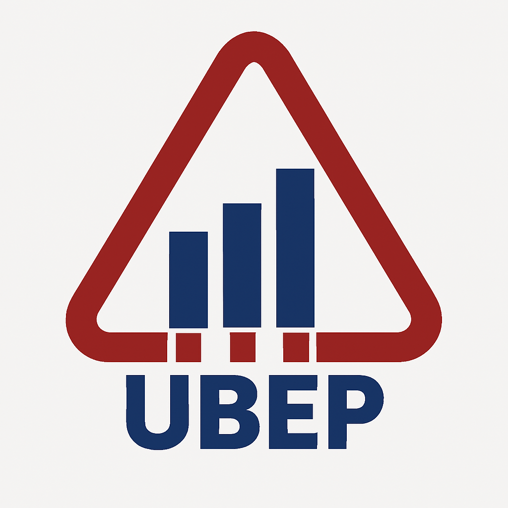

"The patient has elevated liver enzymes"
↓
1. TOKENIZATION — break into pieces
↓
2. EMBEDDINGS — convert to numbers
↓
3. SELF-ATTENTION — understand context
↓
4. GENERATION — predict next word
↓
"suggesting possible hepatocellular injury..."Example:
| Text | Tokens |
|---|---|
| “heart” | [heart] (1 token) |
| “cardiomyopathy” | [card, io, my, opathy] (4 tokens) |
| “Patient stable” | [Patient, stable] (2 tokens) |
| “ALT: 85 U/L” | [ALT, :, 85, U, /, L] (6 tokens) |
Intuition:
"liver" → [0.2, -0.5, 0.8, 0.1, ...] ←─┐
"hepatic"→ [0.3, -0.4, 0.7, 0.2, ...] ←─┤ Similar!
"kidney" → [0.1, -0.3, 0.6, 0.0, ...] ←─┘ Related organ
"car" → [-0.8, 0.9, -0.2, 0.5, ...] ← Very different!Medical example:
“The liver is enlarged and shows steatosis. It may indicate NAFLD.”
What does “it” refer to?
Sentence: “The patient with chest pain was diagnosed with MI and treated with aspirin”
When processing “MI”, the model attends to:
| Word | Attention Weight | Why? |
|---|---|---|
| chest | High | Anatomical location of MI |
| pain | High | Key symptom |
| patient | Medium | Subject of sentence |
| aspirin | High | Standard treatment |
| with | Low | Function word |
| the | Low | Function word |
The model learns these patterns from billions of examples.
Example generation:
Input: "The ECG shows ST"
↓
Model: elevation (85%), depression (10%), segment (3%), ...
↓
Output: "The ECG shows ST elevation"
↓
Model: in (70%), suggesting (15%), consistent (10%), ...
↓
Output: "The ECG shows ST elevation in leads..."| Concept | Clinical Implication |
|---|---|
| Tokenization | Medical text uses more tokens → higher API costs, shorter context |
| Embeddings | Model “knows” liver ≈ hepatic, but may miss rare syndromes |
| Self-attention | Good at resolving pronouns in notes, but can still miss context |
| Generation | Always produces output — even when uncertain (hallucinations) |
| Fine-tuning | Medical models > general models for clinical tasks |
Input prompt:
“Write a discharge summary for: 72-year-old male, admitted for chest pain. Troponin elevated. Coronary angiography showed 90% LAD stenosis. PCI with DES performed. Discharged on aspirin, clopidogrel, atorvastatin, metoprolol.”
LLM output:
“A 72-year-old male was admitted with acute chest pain and elevated troponin levels consistent with NSTEMI. Coronary angiography revealed 90% stenosis of the left anterior descending artery. Successful percutaneous coronary intervention was performed with drug-eluting stent placement. The patient was discharged in stable condition on dual antiplatelet therapy (aspirin 100mg, clopidogrel 75mg), atorvastatin 80mg, and metoprolol 50mg. Follow-up in cardiology clinic in 4 weeks recommended.”
Input prompt:
“Interpret: ALT 85 U/L (ref 7-56), AST 72 U/L (ref 8-48), GGT 120 U/L (ref 9-48), ALP normal, Bilirubin normal, Albumin normal.”
LLM output:
“The liver panel shows elevated transaminases (ALT 85, AST 72) with ALT > AST, and elevated GGT (120), with preserved synthetic function (normal albumin) and no cholestasis (normal ALP, bilirubin). This pattern suggests hepatocellular injury with possible etiologies including: NAFLD/NASH (given ALT > AST ratio), medication-induced hepatotoxicity, viral hepatitis, or early alcoholic liver disease. Recommend: hepatitis B/C serology, metabolic panel, medication review, and liver ultrasound.”
Input prompt:
“55-year-old female with progressive fatigue, weight loss, and hyperpigmentation. Labs show hyponatremia (128 mEq/L), hyperkalemia (5.8 mEq/L), low morning cortisol. Generate differential diagnosis.”
LLM output:
“The clinical picture strongly suggests primary adrenal insufficiency (Addison’s disease):
- Fatigue, weight loss = non-specific but common
- Hyperpigmentation = ACTH-driven melanin (pathognomonic)
- Hyponatremia + hyperkalemia = mineralocorticoid deficiency
- Low cortisol = confirms axis dysfunction
Differential includes: autoimmune adrenalitis (most common), adrenal metastases, infections (TB, fungal), adrenal hemorrhage. Recommend ACTH stimulation test and adrenal CT.”
Note
The most impactful medical AI combines domain expertise with multimodal data (images + genomics + clinical records).
Warning
Plausible ≠ Correct. A fluent, confident answer can still be completely wrong.
| ✅ Do | ❌ Don’t |
|---|---|
| Use as draft generator | Trust blindly without review |
| Verify all factual claims | Input PHI on public APIs |
| Use validated tools for clinical decisions | Use ChatGPT for diagnosis |
| Keep human in the loop | Assume AI “knows” medicine |
| Document AI-assisted decisions | Cite LLM outputs as sources |
Example: “Interpret this ECG” at temperature 0.1 gives consistent output. At 0.8, you get creative but potentially unreliable variations.
📧 Contact: luca.vedovelli@ubep.unipd.it
🔗 Resources:
